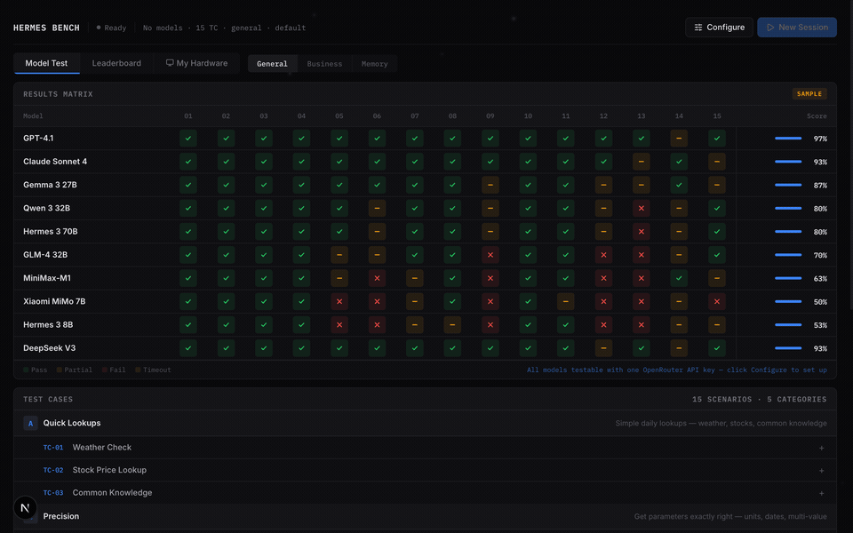
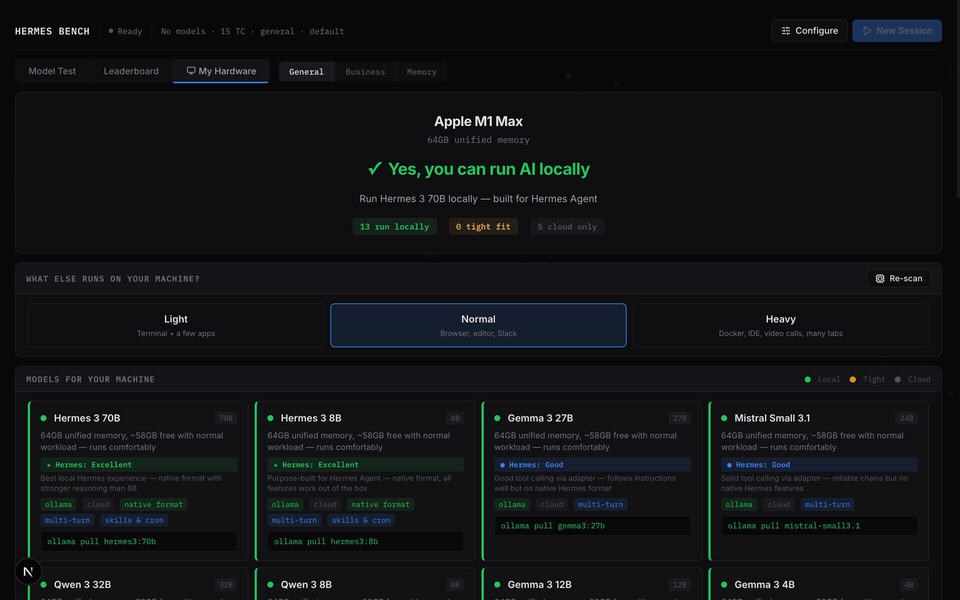
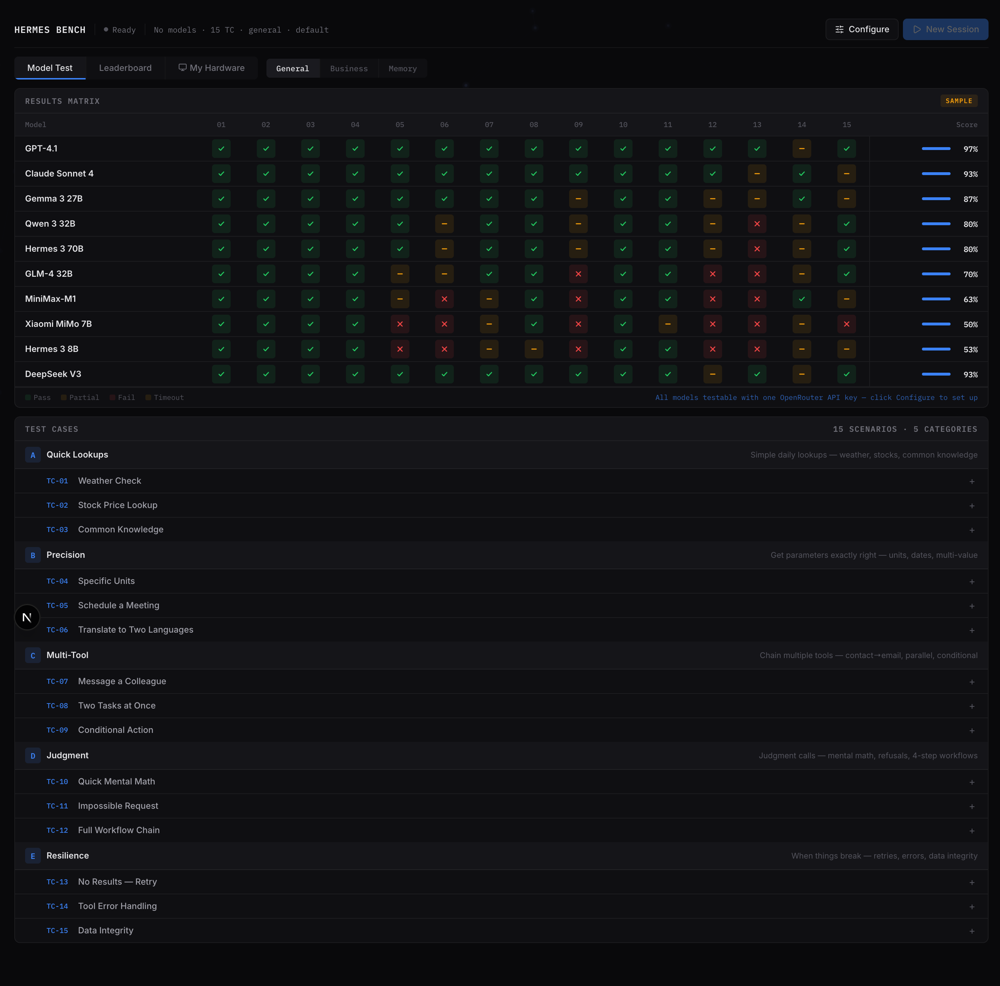
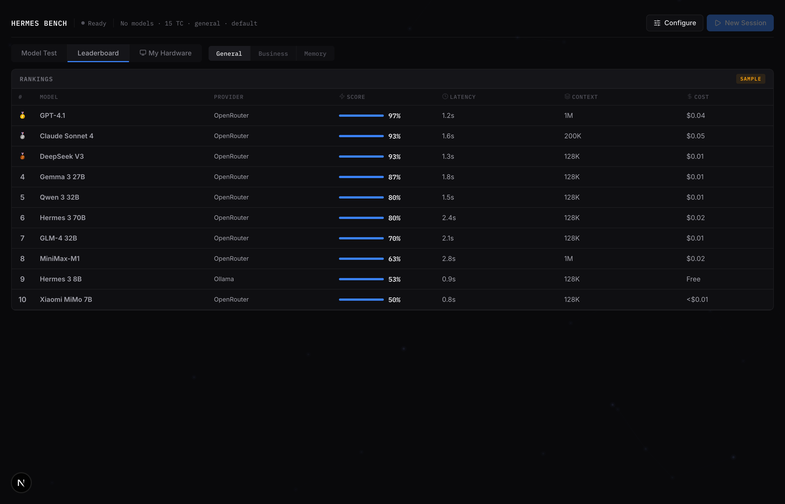
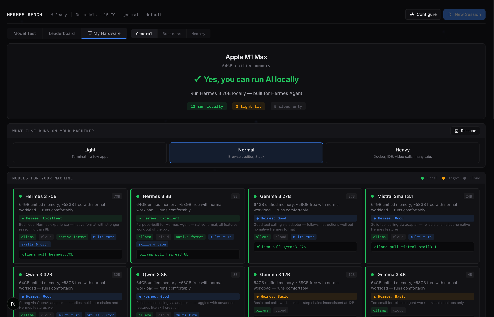
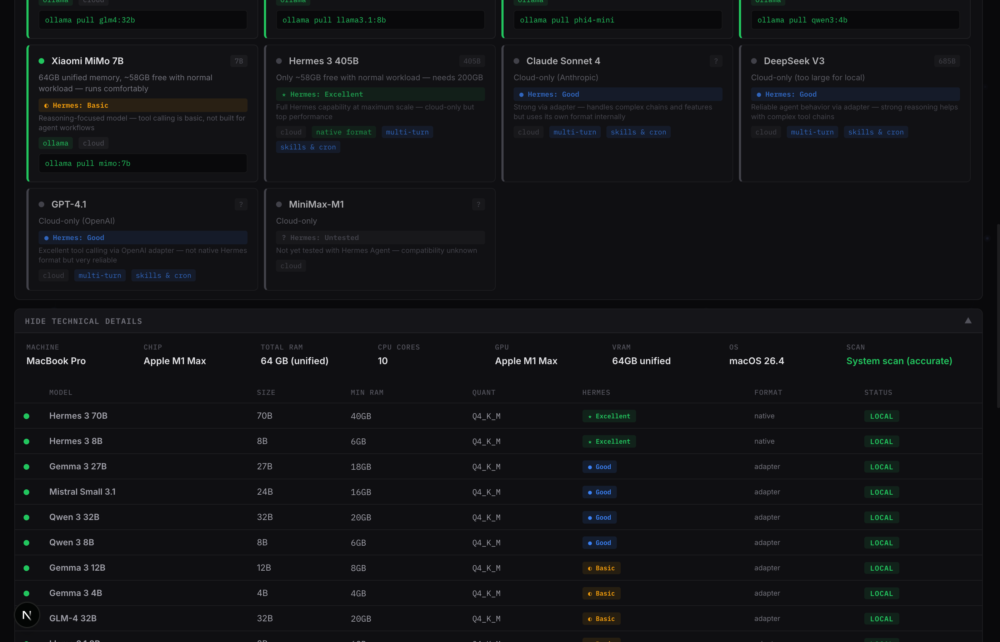

Test 10+ LLMs across 45 scenarios. See which models handle tool calling, multi-step workflows, and memory retrieval — then check if your hardware can run them locally.

Most benchmarks test general intelligence. This one tests what matters for AI agents: can the model use tools correctly, chain actions, and work inside Hermes Agent Engine?
Weather lookups, CRM pipelines, memory retrieval, error recovery, cron scheduling. Not toy examples — real agent tasks across 3 suites.
Each model rated on 5 factors: native format support, system prompt adherence, multi-turn chains, Hermes features, and community verification.
Auto-detects your CPU, RAM, GPU. Tells you in plain English which models run locally, accounting for your daily workload.
10 models, 15 tests, one grid. Color-coded pass/partial/fail with live scoring, latency, context window, and cost estimates.
OpenRouter, Ollama, vLLM, llama.cpp, MLX, LM Studio. One API key tests everything — or run fully local.
Click any cell to see every turn: what the model sent, which tools it called, what arguments it used, and where it went wrong.
The dashboard has three views: the test grid, the leaderboard, and the hardware checker.

Hardware view: auto-detects your machine, adjusts for your workload, shows Hermes compatibility per model

10 models tested across 15 scenarios with color-coded pass/partial/fail and live score percentages.

Ranked by score with average latency, context window, cost per run, and average turns per scenario.

Plain English verdict based on your actual hardware specs — no technical knowledge required.

Power users can toggle full specs: RAM requirements, quantization, Hermes format support, and compatibility.
Each suite targets a different agent capability. Models are scored 0-2 per scenario across 5 categories.
Generic benchmarks test tool calling in isolation. We test how well each model works specifically inside Hermes Agent Engine — the format, the features, the real workflow.
| Factor | What It Measures | Why It Matters |
|---|---|---|
| Format Support | Native Hermes ChatML vs OpenAI JSON adapter | Native format = no translation layer, fewer parsing errors |
| System Prompt | Follows Hermes system prompt conventions | Hermes Agent uses specific prompts — models must respect them |
| Multi-Turn Chains | Sequential tool calls across conversation turns | Real agent tasks require 3-8 turns of tool use |
| Hermes Features | Skill creation, cron scheduling, MCP, sub-agents | These are Hermes-specific — other frameworks don't have them |
| Community Tested | Verified by real users in Hermes Agent | Lab results vs production reality |
Clone, install, run. One command to start testing.
Requires Node.js 20+
git clone https://github.com/juliusalba/agentic-toolcall.git
cd agentic-toolcall
npm install
cp .env.example .env
Easiest: one OpenRouter API key tests all cloud models
# In .env:
OPENROUTER_API_KEY=sk-or-...
LLM_MODELS=openrouter:nousresearch/hermes-3-llama-3.1-8b
Open localhost:3000, click "New Session", pick models, go
npm run dev
No API key needed — runs on your machine
ollama pull hermes3:8b
# In .env:
LLM_MODELS=ollama:hermes3:8b